Links are the defining feature of the web because they allow you to move from one web page to another — enabling the very idea of browsing or surfing.
You will commonly come across the following types of links:
Links are created using the <a> element. Users can click on anything between the opening <a> tag and the closing </a> tag. You specify which page you want to link to using the href attribute.
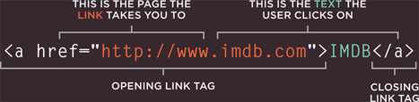
The text between the opening <a> tag and closing </a> tag is known as link text. Where possible, your link text should explain where visitors will be taken if they click on it (rather than just saying “click here”). Below you can see the link to IMDB that was created on the previous page.
Many people navigate websites by scanning the text for links. Clear link text can help visitors find what they want. This will give them a more positive impression of your site and may encourage them to visit it for longer. (It also helps people using screen reader software.)
To write good link text, you can think of words people might use when searching for the page that you are linking to. (For example, rather than write “places to stay” you could use something more specific such as “hotels in New York.”)
Links are created using the <a> element which has an attribute called href. The value of the href attribute is the page that you want people to go to when they click on the link.
Users can click on anything that appears between the opening <a> tag and the closing </a> tag and will be taken to the page specified in the href attribute.
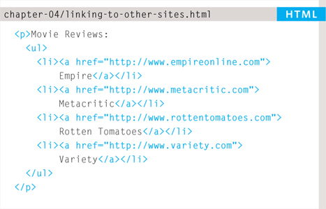
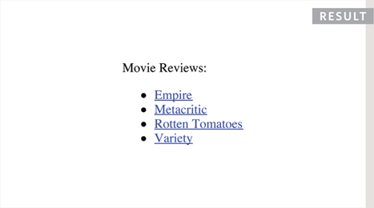
When you link to a different website, the value of the href attribute will be the full web address for the site, which is known as an absolute URL.
Browsers show links in blue with an underline by default.
URL stands for Uniform Resource Locator. Every web page has its own URL. This is th web address that you would typ into a browser if you wanted to visit that specific page.
An absolute URL starts with the domain name for that site, and can be followed by the path to a specific page. If no page is specified, the site will display the homepage.
When you are linking to other pages within the same site, you do not need to specify the domain name in the URL. You can use a shorthand known as a relative URL.
If all the pages of the site are in the same folder, then the value of the href attribute is just the name of the file.
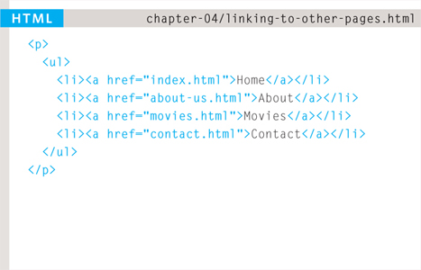
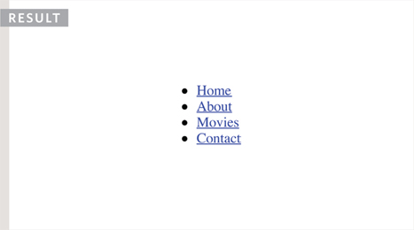
If you have different pages of a site in different folders, then you can use a slightly more complex syntax to indicate where the page is in relation to the current page. You will learn more about these on the pages 81-84.
If you look at the download code for each chapter, you will see that the index.html file contains links that use relative URLs.
When linking to other pages within the same site, you can use relative URLs. These are like a shorthand version of absolute URLs because you do not need to specify the domain name.
We will take a closer look at relative URLs on pages 83-84 as there are several helpful shortcuts you can use to write links to other pages on your own website.
Relative URLs help when building a site on your computer because you can create links between pages without having to set up your domain name or hosting.
On larger websites it's a good idea to organize your code by placing the pages for each different section of the site into a new folder. Folders on a website are sometimes referred to as directories.
The diagram on the right shows the directory structure for a fictional entertainment listings website called ExampleArts.
The top-level folder is known as the root folder. (In this example, the root folder is called examplearts.) The root folder contains all of the other files and folders for a website.
Each section of the site is placed in a separate folder; this helps organize the files.
The relationship between files and folders on a website is described using the same terminology as a family tree.
In the diagram on the right, you can see some relationships have been drawn in.
The examplearts folder is a parent of the movies, music and theater folders. And the the movies, music and theater folders are children of the examplearts folder.
The main homepage of a site written in HTML (and the homepages of each section in a child folder) is called index.html.
Web servers are usually set up to return the index.html file if no file name is specified.
Therefore, if you enter examplearts.com it will return examplearts.com/index.html, and examplearts.com/music will return examplearts.com/music/index.html.
If you are working with a content management system, blogging software, or an e-commerce system, you might not have individual files for each page of the website.
Instead, these systems often use one template file for each different type of page (such as news articles, blog posts, or products).
Editing the template file would change all of the pages that use that template. Do not change any code that is not HTML or you may break the page.
Every page and every image on a website has a URL (or Uniform Resource Locator). The URL is made up of the domain name followed by the path to that page or image.
The path to the homepage of this site is www.examplearts.com/index.html. The path to the logo for the site is examplearts.com/images/logo.gif.
You use URLs when linking to other web pages and when including images in your own site. On the next page, you will meet a shorthand way to link to files on your own site.
The root folder contains:
Each sub-directory contains:
The movies section contains:
Relative URLs can be used when linking to pages within your own website. They provide a shorthand way of telling the browser where to find your files.
When you are linking to a page on your own website, you do not need to specify the domain name. You can use relative URLs which are a shorthand way to tell the browser where a page is in relation to the current page.
This is especially helpful when creating a new website or learning about HTML because you can create links between pages when they are only on your personal computer (before you have got a domain name and uploaded them to the web).
Because you do not need to repeat the domain name in each link, they are also quicker to write.
If all of the files in your site are in one folder, you simply use the file name for that page.
If your site is organized into separate folders (or directories), you need to tell the browser how to get from the page it is currently on to the page that you are linking to.
If you link to the same page from two different pages you might, therefore, need to write two different relative URLs.
These links make use of the same terminology (borrowed from that of family trees) you met on the previous page which introduces directory structure.
When a website is live (that is, uploaded to a web server) you may see a couple of other techniques used that do not work when the files are on your local computer.
For example, you may see the name of a child folder without the name of a file. In this case the web server will usually try to show the homepage for that section.
A forward slash will return the homepage for the entire site, and a forward slash followed by a file name will return that file providing it is in the root directory.
To create a link that starts up the user's email program and addresses an email to a specified email address, you use the <a> element. However, this time the value of the href attribute starts with mailto: and is followed by the email address you want the email to be sent to.
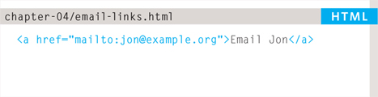
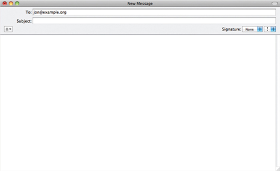
On the right you can see that an email link looks just like any other link but, when it is clicked on, the user's email program will open a new email message and address it to the person specified in the link.
If you want a link to open in a new window, you can use the target attribute on the opening <a> tag. The value of this attribute should be _blank.
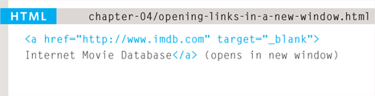
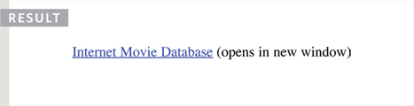
One of the most common reasons a web page author might want a link to be opened in a new window is if it points to another website. In such cases, they hope the user will return to the window containing their site after finishing looking at the other one.
Generally you should avoid opening links in a new window, but if you do, it is considered good practice to inform users that the link will open a new window before they click on it.
At the top of a long page you might want to add a list of contents that links to the corresponding sections lower down. Or you might want to add a link from part way down the page back to the top of it to save users from having to scroll back to the top.
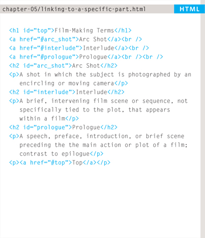
Before you can link to a specific part of a page, you need to identify the points in the page that the link will go to. You do this using the id attribute (which can be used on every HTML element). You can see that the <h1> and <h2> elements in this example have been given id attributes that identify those sections of the page.
The value of the id attribute should start with a letter or an underscore (not a number or any other character) and, on a single page, no two id attributes should have the same value.
To link to an element that uses an id attribute you use the <a> element again, but the value of the href attribute starts with the # symbol, followed by the value of the id attribute of the element you want to link to. In this example, <a href=“#top”> links to the <h1> element at the top of the page whose id attribute has a value top.
If you want to link to a specific part of a different page (whether on your own site or a different website) you can use a similar technique.
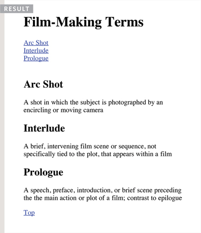
As long as the page you are linking to has id attributes that identify specific parts of the page, you can simply add the same syntax to the end of the link for that page.
Therefore, the href attribute will contain the address for the page (either an absolute URL or a relative URL), followed by the # symbol, followed by the value of the id attribute that is used on the element you are linking to.
For example, to link to the bottom of the homepage of the website that accompanies this book, you would write: <a href=“http:/www.htmlandcssbookcom/#bottom”>
This example is of a web page about film.
The <h1> element is used with an id attribute at the top of the page so that a link can be added to take readers from the bottom of the page to the top. There is an email link to allow readers to contact the author of the web page. There are also a number of links to qualified URLs. These link to various film festivals. Below this list is a link to a relative URL which is an “about” page that lives in the same directory.
<html>
<head>
<title>Links</title>
</head>
<body>
<h1 id=“top”>Film Folk</h1>
<h2>Festival Diary</h2>
<p>Here are some of the film festivals we
will be attending this year.<br />Please
<a href=“mailto:filmfolk@example.org”>
contact us</a> if you would like more
information.</p>
<h3>January</h3>
<p>http://www.sundance.org
Sundance Film Festival </a><br />
Park City, Utah, USA<br />
20 - 30 January 2011</p>
<h3>February</h3>
<p><a href=“http://www.tropfest.com”>
Tropfest </a><br />
Sydney, Australia<br />
20 February 2011</p>
<!-- additional content -->
<p><a href=“about.html”>About Film Folk</a></p>
<p><a href=“#top”>Top of page</a></p>
</body>
</html>
{kind=link}